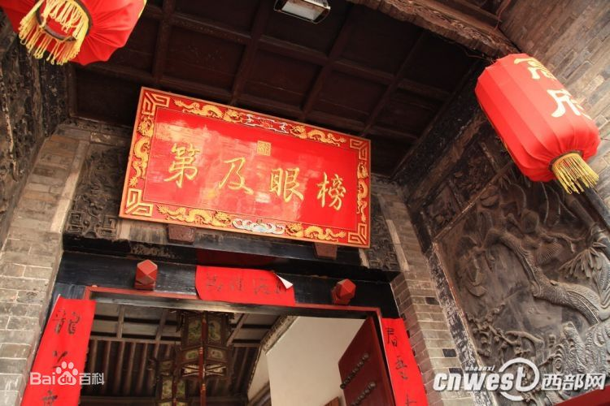
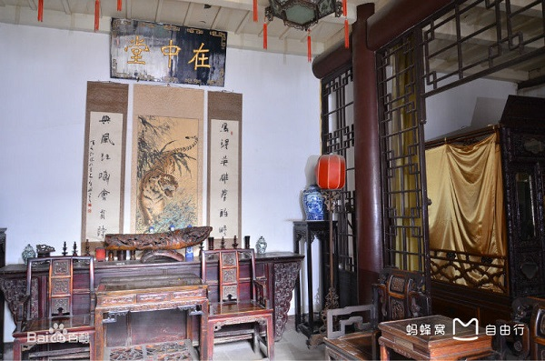

Gao Family Mansion, or Gao's Grand Courtyard, is the former residence of Gao Yuesong, an official of the Ming Dynasty (1368 - 1644 A.D.). With a history of over 400 years, it is one of the best-persevered traditional residences in Xi'an, Shaanxi Provience, China. With an inconspicuous gate at No.144 Beiyuanmen Street, the busy Muslim Quarter in central Xian, the Gao's Grand Courtyard offers a quiet seclusion for visitors to enjoy the traditional Chinese culture. Here one can appreciate the old houses and antique furniture, watch the shadow puppetry, and learn Chinese crafts like painting and paper-cutting. Inside the yard thee are 86 individual rooms, 56 of those rooms are opening to the public visit whereas the rest of the rooms are closed for conservation.
The former Residence of GaoYuesong, located at 144 of Beiyuanmen. It was built in 14 years of the reign of the Chongzhen Emperor, Ming Dynasty, the whole courtyard is about 2310m2. The construction of the courtyard is quadrangle with wood and brick. Gao Yuesong's original family was Zhenjiang, Jiangsu province. In his youth, he took the imperial examination and appointed as the second-place winner at palace examination by emperor himself. He was fairly loyal and diligent in his career and his upright won him a good reputation. The Queen Mother appreciated him very much and appropriated a large sum of money for the renovation of his residence, awarded the family a horizontal table with autographic inscription of Bang Yan Ji Di. (which means successfully passing the imperial examination and winning the second place at palace examination).
The Gao Family Mansion was listed as a key Project of Sino-Norway Historical Districts Protection in 1999. Invested by Norway and headed by Mr. Zhang Xiyuan, the residence was thoroughly repaired, which won the "Prize for Cultural Heritage Protection in Asian Pacific Area of UNESCO in 2002". In the year 2003, the artistic department of Chinese Art Academy in Xi'an took charge of a renovation of the residence in all-around, which was assigned as the teaching base for graduate students of architectural departments of both Xi'an University of Architecture & Technology and Norwegian University of Science and Technology, Truncheon, and as the researching base of the institute for Famous Historical and Cultural Cities Research of Chang'an University. The main contents under its administration involve.